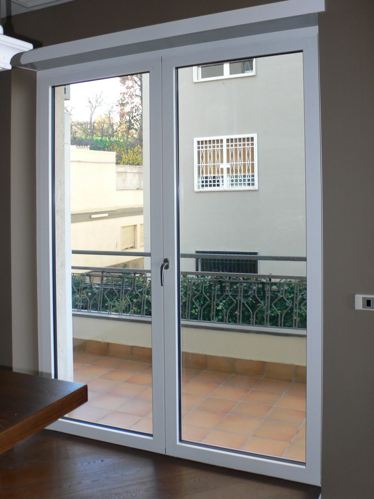

Blog
Forum TV - PLC Forum

Toggle navigation Automazione Sicurezza Elettrotecnica Elettronica Energia Altri forum Meccanica Pneumatica Idraulica Oleodinamica Elettrodomestici Riparazioni TV, audio, video e decoder Antennistica Telefonia Matematica Svago Utility Inventori dimenticati Servizi Aiuto FAQ Regolamento Contattaci Video Didattica Mercatino Chi siamo Archivio Pubblicità Inserisci News/Articoli Vai al contenuto Home PLC Forum Sei già registrato? Accedi Registrati Naviga Forum Downloads Calendario FAQ Staff Utenti connessi Altro Attività Tutte le attività I miei flussi di attività Contenuto non letto Contenuto che ho iniziato Cerca Altro Altro Altro Tutte le attività Home Forum TV Forum TV
Forum
TV - CRT - LCD - PLASMA
Aiwa - Akai Autovox B&O (Bang & Olufsen) Beko - Bluesky - United Blaupunkt - Siemens Brionvega CGE - Imperial - Philco - Orion - Radiomarelli - Seimart Crystall - Capsonic - GBC - Goodmans Daewoo Fenner - Kerion - Kneisser - Kennex Geloso - Singer - Kennedy - Magnadyne Grundig - Metz - Minerva Hitachi Indesit - Lazer - Luxor - Nexius - Nikkei Innohit - Irradio - Lenoir ITT - Graetz - Shaub-Lorentz JVC LG - Goldstar Loewe Mitsubishi Mivar Nokia - Salora Panasonic Philips - Phonola Pioneer Roadstar - Amstrad - Vestel Samsung Sanyo Schneider - Sharp Seleco - Rex - Formenti -Westinghouse Sinudyne - Dumont - Seitech Sonoko Sony Thomson - Saba - Nordmende - Telefunken - A.E.G. Toshiba Ultravox - Watson Altre marche TV Guasti TV Risolti Monitor e videoproiettori Didattica TV Service Mode (Richieste ed inserimento) 304k messaggi samsung lcd ue325000aw Da kkkt, 1 ora faDecoder
Decoder DTT Decoder SAT Guasti risolti Decoder 12.5k messaggi Humax HD3800s2 Da Riccardo Ottaviucci, mercoledì alle 22:42Videogiochi, Playstation, XBOX, GameBoy, ecc.
Videogiochi, Playstation, Xbox, GameBoy ecc. Guasti risolti Videogiochi, Playstation, XBOX, GameBoy, ecc. 1.3k messaggi PS4 LED Bianco fisso Da Omi95, 3 novembre 2020Telecomandi
Telecomandi Guasti risolti Telecomandi 3.1k messaggi Programmazione Telecomando Aprimatic Tr4 Da Andrea 6r,Posted by Jack  Read more
Read more  Comments (15)
Comments (15)  2021.04.20 20:27
2021.04.20 20:27